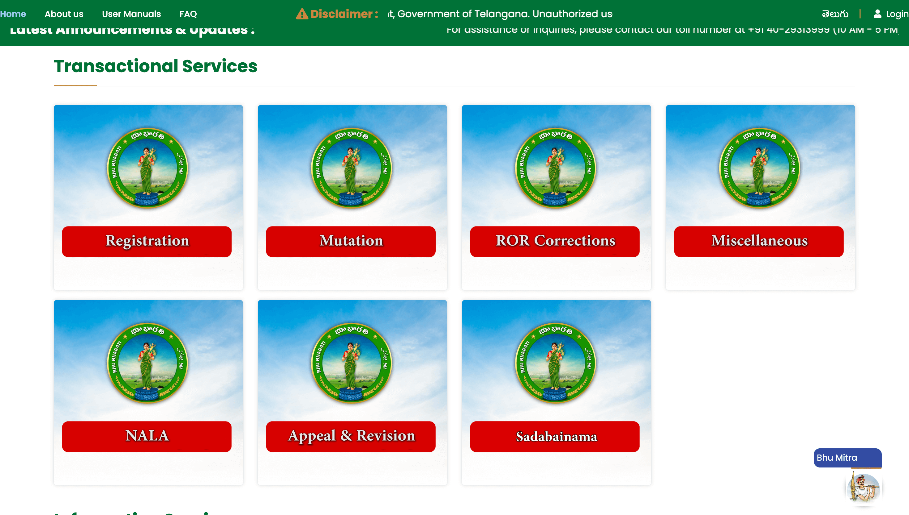

Bhu Bharati Telangana Land Records Online Guide (భూ భారతి తెలంగాణ భూ రికార్డులు)
భూ భారతి తెలంగాణ అంటే ఏమిటి? | What is Bhu Bharati Telangana?
భూ భారతి తెలంగాణ అనేది తెలంగాణ ప్రభుత్వం ప్రారంభించిన అధికారిక భూ రికార్డుల డిజిటల్ పోర్టల్.

Bhu Bharati Telangana is the official digital land records portal launched by the Telangana Government.
భూ భారతి పోర్టల్ ద్వారా లభించే సేవలు
- ROR Check Online (Record of Rights)
- Survey Number ద్వారా భూమి వివరాలు
- Mutation Application Status Tracking
- Prohibited Property Check
- EC Download (Encumbrance Certificate)
స్టెప్ బై స్టెప్ గైడ్ | Step-by-Step Guide
స్టెప్ 1: అధికారిక వెబ్సైట్ ఓపెన్ చేయండి
👉 Bhu Bharati Telangana Official Website

In-Content Ad
స్టెప్ 2: లాగిన్ లేదా రిజిస్టర్ చేయండి
OTP ద్వారా అకౌంట్ సృష్టించి పోర్టల్లో లాగిన్ అవ్వండి.

స్టెప్ 3: భూ వివరాలు సెర్చ్ చేయండి
Survey Number లేదా Pattadar Passbook Number ద్వారా ల్యాండ్ రికార్డులు చూడండి.

In-Content Ad
స్టెప్ 4: EC మరియు ROR డౌన్లోడ్ చేయండి
భూమి రికార్డులు PDF రూపంలో డౌన్లోడ్ చేసుకోవచ్చు.

స్టెప్ 5: అప్లికేషన్ స్టేటస్ చెక్ చేయండి
Mutation లేదా ఇతర అప్లికేషన్ల స్టేటస్ తెలుసుకోండి.

EC ఎలా డౌన్లోడ్ చేయాలి? | How to Download EC in Telangana

EC (Encumbrance Certificate) భూమిపై ఉన్న లీగల్ బాధ్యతలు లేదా రుణ వివరాలను చూపించే ముఖ్యమైన డాక్యుమెంట్.
Blog Ad Space
- భూ భారతి పోర్టల్ ఓపెన్ చేయండి 👉 Official Bhu Bharati Telangana Website
- Login అవ్వండి
- Land Details Search ఎంపిక చేయండి
- Survey Number నమోదు చేయండి
- EC Download క్లిక్ చేయండి
Related Telangana Land Record Guides
- How to Check ROR Telangana Online
- Track Mutation Status in Telangana
- Search Land Details by Survey Number
- Check Prohibited Property List Telangana
భూ రికార్డులు ఆన్లైన్లో చూడడం వల్ల లాభాలు
- గవర్నమెంట్ ఆఫీస్కి వెళ్లాల్సిన అవసరం లేదు
- సురక్షితమైన భూమి కొనుగోలు
- లోన్ ప్రాసెస్ సులభం
- పూర్తి పారదర్శకత